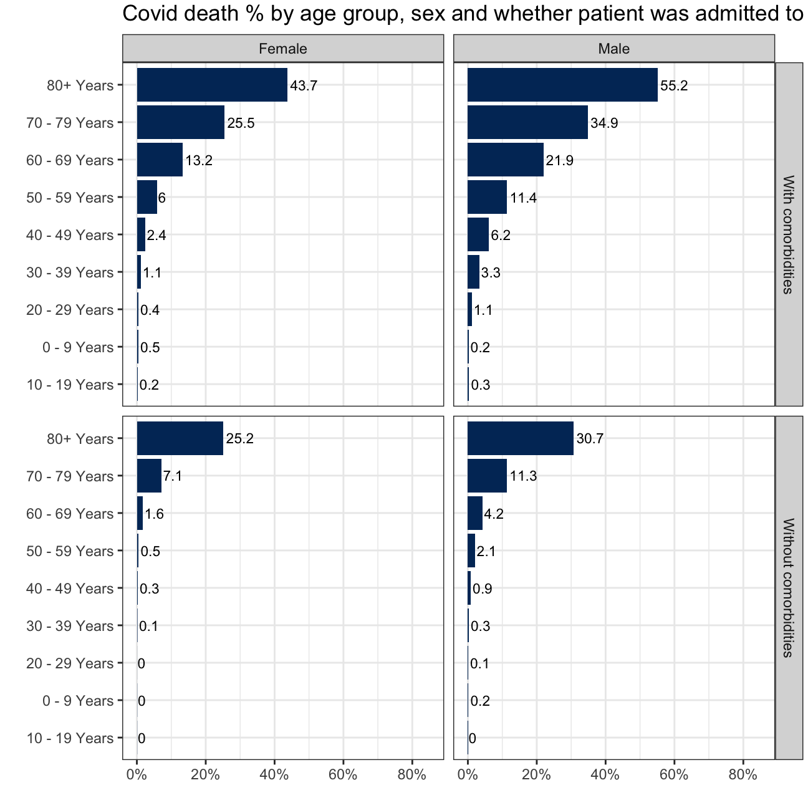
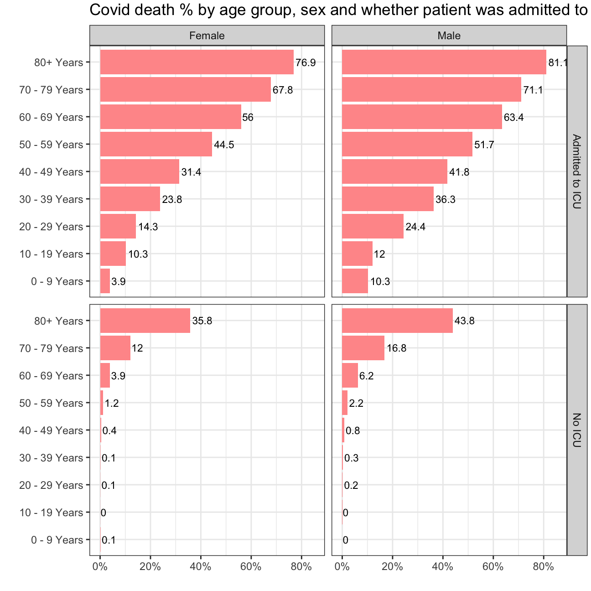

#CDC COVID-19 Public Use Data
Let us revisit the CDC Covid-19 Case Surveillance Data. There are well over 3 million entries of individual, de-identified patient data. Since this is a large file, I suggest use vroom to load it and keep cache=TRUE in the chunk options.
# file contains 11 variables and 3.66m rows and is well over 380Mb.
# It will take time to download
# URL link to CDC to download data
url <- "https://data.cdc.gov/api/views/vbim-akqf/rows.csv?accessType=DOWNLOAD"
covid_data <- vroom::vroom(url)%>% # If vroom::vroom(url) doesn't work, use read_csv(url)
clean_names()
cleaned_data <- covid_data %>%
filter(death_yn %in% c("Yes", "No")) %>% #to remove non-meaningful value in death_yn.
filter(medcond_yn %in% c("Yes","No") & icu_yn %in% c("Yes", "No")) %>% #to remove non-meaningful value in medcond_yn and icu_yn.
filter(age_group!="Unknown") %>% #to remove non-meaningful value in age_group.
filter(sex %in% c("Male","Female")) %>%
mutate(
medcond_yn=case_when(
medcond_yn=="Yes" ~ "With comorbidities",
medcond_yn=="No" ~ "Without comorbidities"
),
icu_yn=case_when(
icu_yn=="Yes" ~ "Admitted to ICU",
icu_yn=="No" ~ "No ICU"
))Given the data we have, we produce two graphs that show death % rate:
#by age group, sex, and whether the patient had co-morbidities or not.
cleaned_data %>%
group_by(sex, medcond_yn, age_group) %>%
summarise(death_num = count(death_yn=="Yes"), total_num =n(), death_rate = death_num/n()) %>%
ggplot(aes(x=death_rate,y=reorder(age_group, death_rate)))+
geom_col(fill="#003366")+
theme_bw() +
labs (title = "Covid death % by age group, sex and whether patient was admitted to ICU", x="", y="") +
geom_text(aes(label=round(death_rate*100,1)), hjust=-0.1, size=3)+ #ajust size, position, and decimal for barlabels.
facet_grid(medcond_yn ~ sex)+ #get the 2x2 combined plot, vertical medcond_yn and horizontal sex.
scale_x_continuous(limits=c(0,0.85),breaks=seq(0,0.8,0.2),label=scales::percent)+ #make all labels in the plot and axis label percent.
theme(plot.margin = unit(c(0.1,0.1,0.1,0.1),"cm"))
#by age group, sex, and whether the patient was admited to Intensive Care Unit (ICU) or not.
cleaned_data %>%
group_by(sex, icu_yn, age_group) %>%
summarise(death_num = count(death_yn=="Yes"), total_num =n(), death_rate = death_num/n()) %>%
ggplot(aes(x=death_rate,y=reorder(age_group, death_rate)))+
geom_col(fill="#FF9999")+
theme_bw() +
labs (title = "Covid death % by age group, sex and whether patient was admitted to ICU", x="", y="") +
geom_text(aes(label=round(death_rate*100,1)), hjust=-0.1, size=3)+
facet_grid(icu_yn ~ sex)+ #get the 2x2 combined plot, vertical icu_yn and horizontal sex.
scale_x_continuous(limits=c(0,0.85),breaks=seq(0,0.8,0.2),label=scales::percent)+
theme(plot.margin = unit(c(0.1,0.1,0.1,0.1),"cm"))